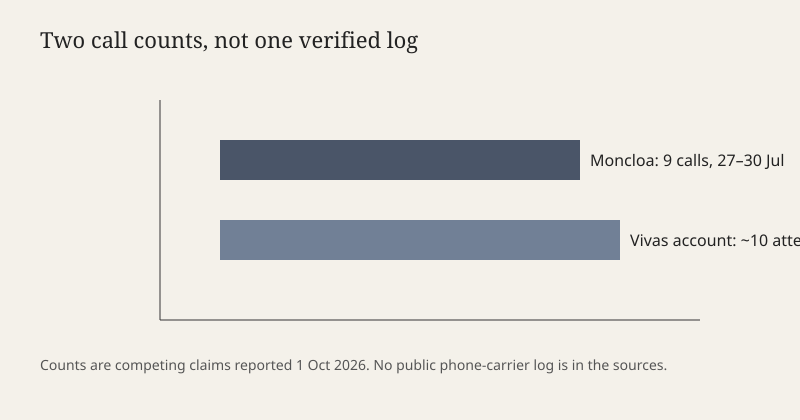

Ceuta · Madrid · 1 de octubre de 2026
Moncloa dice que atendió nueve llamadas con el gabinete de Vivas; el presidente ceutí mantiene otra cuenta

Lo que coinciden las mesas
El 1 de octubre de 2026 el Gobierno y el presidente de Ceuta, Juan Jesús Vivas, ofrecieron cuentas distintas de las llamadas entre ambos gabinetes los días 27 y 30 de julio, antes y al inicio de la entrada masiva de migrantes por el Tarajal. RTVE informó de que Moncloa sitúa nueve comunicaciones, todas atendidas, y de que Vivas habló con Pedro Sánchez el 30 de julio después de solicitarlo. Ceuta Actualidad recogió el mismo recuento de nueve llamadas en un texto que el medio describe como comunicado, y la afirmación de Moncloa de que ocho llamadas perdidas atribuidas al gabinete ceutí no aparecen en sus registros.
Vivas, que declaró como testigo ante la jueza María Tardón en la Audiencia Nacional, sostiene que desde el 27 de julio intentó contactar en torno a diez ocasiones y que solo tres fueron atendidas. Antena 3 detalló una llamada del 27 de julio a las 8:39, del jefe de gabinete de Vivas, Pablo García, al jefe de gabinete de Sánchez, Diego Rubio, respondida y de seis minutos. Esa llamada concreta está en la secuencia periodística; no convierte el resto del listado en un registro de operadora publicado.
Lo que es solo una cita
“Todas las peticiones fueron atendidas” es la frase del Ejecutivo. “No obtuvo respuesta” es la frase de Vivas sobre el intento de hablar con Sánchez el 27 de julio. Las dos pueden referirse a objetos distintos: contacto entre gabinetes, o conversación entre los dos presidentes. Si el desacuerdo es de definición, no es todavía una prueba de que uno falsifique el diario de llamadas. “Mentir”, dicho por fuentes del Ejecutivo a RTVE, es una acusación. No es un peritaje.
Vivas interpretó, según Ceuta Actualidad, una indicación recibida como petición de que no siguiera llamando. Esa interpretación es suya. No hay en las fuentes una grabación pública de esa frase.
Mecanismo
Ceuta es ciudad autónoma. La frontera terrestre con Marruecos y el control de costas son competencia estatal. El presidente autonómico puede pedir medios, declarar la urgencia política y comparecer en un juzgado; no dirige la Guardia Civil ni la Policía Nacional. Por eso el objeto de la disputa de octubre no es solo el tono. Es si Madrid tuvo aviso útil el 27 de julio, tres días antes de la entrada masiva que Vivas sitúa en la mañana del 30, y si la respuesta fue operativa o solo telefónica.
Un registro de centralita de Moncloa anota llamadas en los terminales del presidente, del director de gabinete, del director adjunto y de las secretarías. No anota por sí solo el contenido, ni las llamadas hechas desde un móvil personal no desviado a esa centralita. Un listado ceutí puede contar intentos que la otra centralita no vio. Sin el volcado de ambas operadoras, o sin una acta judicial que los incorpore, el lector tiene dos tablas políticas. RTVE dice que tuvo acceso al listado de Moncloa. Eso eleva la cuenta de nueve por encima del rumor, y no la convierte en el único registro posible.
La causa en la Audiencia Nacional es el marco. Vivas acudió como testigo, no como imputado, a detallar avisos y documentación. Lo que declaró bajo esa condición tiene un valor procesal distinto de una rueda de prensa, pero el acta no está publicada en las piezas usadas aquí. Las crónicas son el intermediario.
En paralelo, COPE informó de que los Reyes visitarán Ceuta y Melilla los días 13 y 14 de octubre y de que Sánchez no viaja con ellos. Es un hecho de agenda anunciado, no una prueba sobre las llamadas de julio. Sirve para ver que la crisis sigue en el calendario institucional dos meses después.
Lo que la noticia no es
No es un recuento nuevo de personas entradas en julio. No es una sentencia sobre la responsabilidad penal de nadie. No es la demostración de que nueve o diez sea el número verdadero. No es una absolución ni una condena del dispositivo fronterizo. La discusión de las llamadas importa porque el aviso previo es una de las piezas con las que cada parte explica la lentitud o la diligencia de aquellos días. Explicar no es medir.
